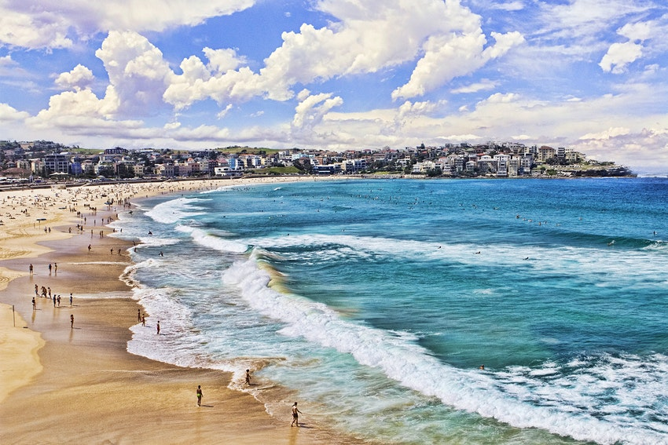
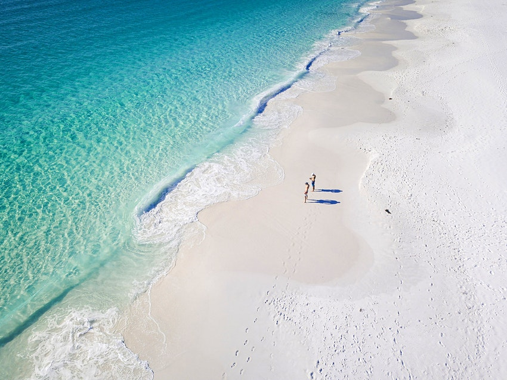

Cable Beach
Cable Beach is world-renowned for its looooong stretch of sand (14 miles in total) and bathwater tub-style ocean temperatures. Sheer bliss. The beach is also synonymous with camels (the animals were first imported by the European settlers of Australia), and sunset rides are a highlight for many visitors.
Four Mile Beach
This broad stretch of squeaky sand wraps around the eastern side of the peninsula in a near-perfect arc of sand and swaying palms – access is off the eastern end of Macrossan St, the town's main thoroughfare, and various points south. There's a patrolled swimming area in front of the surf life-saving club (with a stinger net in summer) and sunloungers available for hire.
Whitehaven Beach

Whitehaven Beach in the Whitsunday Islands along the Great Barrier Reef is not just one of Australia's top stretches of coast, it often scores a place on lists of the best beaches in the world. The seven-kilometer arc of powdery white sand here is actually silica, a silky-soft substance that creates a striking contrast with the tropical turquoise sea and emerald headlands. Best of all, the beach lies in a national park on Whitsunday Island, ensuring that it remains protected and pristine, despite the many day-trippers who land on these shores.